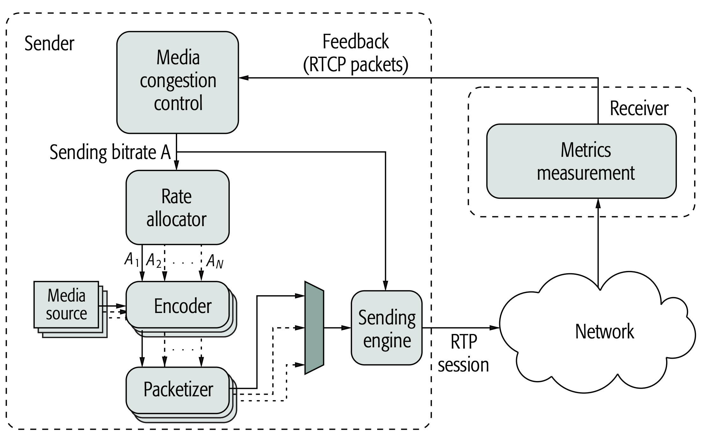

WebRTC RTP Congestion Control¶
Abstract |
WebRTC RTP 拥塞控制 |
Authors |
Walter Fan |
Status |
WIP |
Updated |
2021-11-18 |
基本架构¶
在发送方，根据 RTCP Receiver Report 中的 faction lost 得知丢包率，可以调整发送的码率
在接收方，根据 RTP 包到达的时间延迟，通过 arrival time filter, 估算出网络延迟 m(ti), 经过 over-user detector 来判断当前网络的拥塞情况， 再由 Remote rate controller 根据规则计算出最大码率 Ar, 通过 RTCP REMB 消息将 Ar 发回给发送方。 发送方再由 A_s, A_r 和配置，计算出目标的码率 A, 应用到 Encoder 和 Packed Sender 来控制发送方的码率。

GCC Architecture¶
术语¶
RMCAT: RTP Media Congestion Avoidance Techniques 即 RTP 媒体拥塞避免技术
Queuing Delay 排队延迟
Delay gradient 延迟梯度
Kalman filter 卡尔曼滤波
inter-depature delta time 发送间隔时差
inter-arrival delta time 接收间隔时差
inter-group delay variation 包间延迟变化
GCC: Google Congestion control 谷歌拥塞控制
BBR: Bottleneck Bandwidth and Round-trip propagation time 瓶颈带宽和往返传播时间
PCC: Performance-oriented Congestion Control 基于性能的拥塞控制
TCC: Transport-wide Congestion Control 传输带宽控制
REMB: Receiver Estimated Maximum Bitrate 接收端估计最大比特率
Starvation: 饥饿，如果某个传输通道由于其他传输通道抢占了带宽而没有得到流量，称为饥饿
TMMBR: Temporary Maximum Media Stream Bit Rate Request 临时最大媒体流带宽请求
TMMBN: Temporary Maximum Media Stream Bit Rate Notification 临时最大媒体流带宽通知， 表示 TMMBR 收到
交互式实时媒体的拥塞控制的需求¶
基本要求：在最多几百毫秒之内，接收方能够连贯流畅地听到或看到发送方的声音，图像或视频。
拥塞控制算法必须尝试为交互式实时流量提供尽可能低的延迟传输，同时仍然提供有用的带宽量。
该算法必须对其他流公平，包括实时流（例如自身的其他实例）和 TCP 流，包括长期存在的流和突发流量，例如典型的 Web 浏览会话生成的流量。
该算法不应该由于竞争带宽而使得 TCP 流饥饿，并且应该尽可能避免 TCP 流饥饿
该算法应该尽快适应流开始时的初始网络条件。
如果 RTP 流停止或不连续时（例如，当使用 VAD 语音活动检测时），算法应该是稳定的。
在可能的情况下，当 RTP 流共享一个公用的瓶颈时，算法应该综合考虑在两个端点之间发送的多个 RTP 流之间的信息，无论这些流是否复用相同的端口。
该算法不应该需要来自网络元素的任何特殊支持才能传达与拥塞相关的信息。
由于这里假设是一组 RTP 流，反向通道通常应该通过 RTP 控制协议 (RTCP) 完成
由该算法管理的流和在瓶颈处相互竞争的流可能具有不同的差分服务代码点 (DSCP) 2 [RFC5865] 标记，具体取决于流量类型，或者可能受基于流的 QoS 的约束。
该算法应该将反向信道(backchannel)信息的意外缺失, 感知为信道过度使用问题的可能指示，并相应地做出反应, 以避免导致拥塞崩溃的突发事件。
当应用主动队列管理 (AQM: Active Queue Management) 算法时，该算法应该是稳定的并保持低延迟。另请注意，这些算法可能适用于瓶颈中的多个队列或单个队列。
标准化状况和存在的问题¶
参见由 3 “Luca De Cicco, Gaetano Carlucci, and Saverio Mascolo” 所撰写的文章
建议的方法是在通过一个传输层流发送的单个 RTP 会话中复用所有 RTP 数据包流，以减少 NAT 处理的流数。
遵循这种方法，媒体拥塞控制算法根据在接收器处测量并通过 RTCP 数据包发回的一组指标计算聚合 RTP 会话的总发送速率 A。
速率分配模块将总比特率 A 的一部分 \(A_i\) 分配给每个媒体流。特别是，每个媒体流都以目标编码速率 \(A_i\) 压缩，使得所有这些速率的总和等于计算出的发送速率 A。
然后，媒体流通过一个单一的 RTP 会话进行复用，该会话为发送引擎提供信息。该模块负责以尽可能接近拥塞控制算法计算出的速率向网络发送 RTP 数据包。
值得注意的是，拥塞控制算法的位置没有指定，可以是发送方、接收方或分布在发送方和接收方。
作为示例，下图显示了拥塞控制算法仅放置在发送方的情况。接收器需要实现一个模块，该模块测量要通过 RTCP 数据包反馈给拥塞控制算法的指标。
Requirement |
|
|---|---|
延迟 Latency |
尽可能低于 100ms |
丢包 Packet losses |
越少越好，可应用 FEC |
吞吐量 Throughput |
越高越好 |
突发性 Burstiness |
要产生一个平滑的发送速率 |
公平性 Fairness |
应在实时媒体流和数据流之间公平地分享带宽 |
饥饿 Starvation |
媒体流不应由于过度竞争而使TCP 流饥饿 |
网络支持 Network support |
无需特别的网络支持即可运行 |
设计¶
满足这些要求的算法设计面临着几个选择
The transport protocol 传输协议
Congestion detection 拥塞检测
The actuation mechanism to be employed 所采用的驱动机制
通过端到端的度量来检测拥塞的方法可以分为两大类：
基于丢包的算法 Loss-based algorithms
基于延迟的算法 Delay-based algorithms
拥塞检测可以是隐式的（基于在端点执行的端到端测量），也可以是显式的（通过监视路由器的缓冲区长度，在网络元素中直接测量拥塞）。
一般来说，基于延迟的算法优于基于损失的算法，有如下两个原因：
首先，基于延迟的方案可以在数据包因缓冲区溢出而丢失之前检测到拥塞；
其次，基于损失的算法无法控制排队延迟，因为它们通过填充和耗尽 Internet 缓冲区不断探测网络可用带宽，从而产生显着的延迟变化。
注意：
显式控制排队延迟是必要的，因为过大的缓冲区可能会导致几秒的延迟
需要考虑的一个重要问题是在尽力而为的互联网中与基于损失的流量竞争时，防止基于延迟的流量被饿死。
拥塞控制算法可以使用从网络元素发送到端点的显式拥塞信号来补充端到端测量，例如通过使用显式拥塞通知 (ECN) 机制。
关于驱动机制, 拥塞控制算法或者计算一个 congestion window (window-based approach) ，或者显式计算一个 sending rate (rate-based approach).
基于速率的机制的使用使得可以直接使用拥塞控制算法计算的速率来驱动媒体编码器，而在基于窗口的算法的情况下，应该执行从窗口到速率的适当转换。
关键指标¶
来往时间 Round-Trip Time
单向延迟 One-Way Delay
单向延迟变化 One-Way Delay Variation (OWDV)
{kind=link}
# 发送间隔与到达时间之间的延时
d(i) = t(i) – t(i-1) – (T(i) – T(i-1))
RTP 头里带的 timestamp 是根据采样所算的步进, 接收方和发送方的时钟偏移可以不予考虑，因为计算的两个包之间在双方间隔之差，偏移时间可相互抵消。
有三种情况:
OWDV > 0: 排队延迟在增长
OWDV < 0: 排队延迟在减小
OWDV = 0: 排队延迟保持在一个恒定的值:
拥塞队列是空的：发送速率小于传输能力，不需要排队
拥塞队列是满的：发送速率大于传输能力，排队堵住了
拥塞队列是空的：发送速率等于传输能力，排队有序通过
第 3 种情况下，队列保持不变，OWDV 介于零和其最大值之间。 这是一种称为站立队列的不良情况，它会不断延迟传入流量。 因此，为了在充分利用可用带宽的同时保证较小的队列占用，算法必须通过增加其发送速率来持续探测可用带宽，直到检测到正排队延迟变化。 此时，发送速率应迅速降低。 总而言之，需要引入一些排队延迟来运行基于延迟变化的拥塞控制算法。
拥塞控制算法¶
已有三种算法提出来， 详见下表
Feature |
GCC |
NADA |
SCReAM |
|---|---|---|---|
Metrics |
One-way delay variation,loss ratio |
One-way delay, loss ratio |
One-way delay, loss ratio |
Architecture |
Sender-side or hybrid |
Sender-side |
Sender-side |
Actuation mechanism |
Rate-based |
Rate-based |
Window-based |
Network support |
None |
ECN, PCN |
ECN |
Implementation status |
Google Chrome |
Ns-2 and Ns-3 simulators |
OpenWebRTC and simulator |
Codec interaction |
VP8 and VP9 |
Simulated encoder |
OpenH264 and VP9 |
1. GCC by Google¶
Google Congestion Control (GCC) 被应用于 Chrome 浏览器，是相对比较成熟的算法，详见
2. NADA by Cisco¶
Network Assisted Dynamic Adaptation(NADA) 由思科提出，还未应用于实际产品中，有相关的模拟器实现
3. SCReAM by Ericsson¶
Self-Clocked Rate Adaptation for Multimedia(SCReAM) 由爱立信提出，应用于 OpenWebRTC，有相关的模拟器实现
验证方法¶
基于 RFC5033 Specify New Congestion Control Algorithms 和 RFC5166 Metrics for the Evaluation of Congestion Control algorithms, 在 RFC8868 中提出了对于拥塞控制算法的验证方法.
RFC8867 提出了基本的测试用例在, RFC8869 也提高了无线网络测试场景中的测试用例.
度量指标¶
Sending rate, receiver rate, goodput (measured at 200ms intervals)
Packets sent, packets received
Bytes sent, bytes received
Packet delay
Packets lost, packets discarded (from the playout or de-jitter buffer)
If using retransmission or FEC: post-repair loss
Self-fairness and fairness with respect to cross traffic:
Convergence time: The time taken to reach a stable rate at startup, after the available link capacity changes, or when new flows get added to the bottleneck link.
Instability or oscillation in the sending rate: The frequency or number of instances when the sending rate oscillates between an high watermark level and a low watermark level, or vice-versa in a defined time window. For example, the watermarks can be set at 4x interval: 500 Kbps, 2 Mbps, and a time window of 500 ms.
Bandwidth utilization, defined as the ratio of the instantaneous sending rate to the instantaneous bottleneck capacity: This metric is useful only when a congestion-controlled RTP flow is by itself or is competing with similar cross-traffic.
从日志中，可以计算整个持续时间或会话的任何特定部分的统计度量（最小值、最大值、平均值、标准偏差和方差）。 此外，指标（发送速率、接收器速率、吞吐量、延迟）可以在图表中可视化为随时间的变化； 图中的测量值以一秒为间隔。 此外，从日志中，可以绘制数据包延迟的直方图或累积分布函数 (CDF)
RTP Log Format 日志格式¶
Having a common log format simplifies running analyses across different measurement setups and comparing their results.
Send or receive timestamp (Unix): <int>.<int> -- sec.usec decimal
RTP payload type <int> -- decimal
SSRC <int> -- hexadecimal
RTP sequence no <int> -- decimal
RTP timestamp <int> -- decimal
marker bit 0|1 -- character
Payload size <int> -- # bytes, decimal
参考资料¶
Analysis and Design of the Google Congestion Control for WebRTC
RFC8825: Overview: Real-Time Protocols for Browser-Based Applications
RFC8836: Congestion Control Requirements for Interactive Real-Time Media
RFC8083: Multimedia Congestion Control: Circuit Breakers for Unicast RTP Sessions
RMCAT documents: RTP Media Congestion Avoidance Techniques documents
Alvestrand, “RTCP Message for Receiver Estimated Maximum Bitrate,” Internet-Draft draft-alvestrand-rmcat-remb-03 (work in progress), Oct. 2013.
Briscoe et al., “Reducing Internet Latency: A Survey of Techniques and Their Merits,” IEEE Commun. Surveys Tutori- als, vol. 18, no. 3, 2016, pp. 2149–96.
Carlucci et al., “Analysis and Design of the Google Congestion Control for Web Real-time Communication (WebRTC),” Proc. ACM Multimedia Systems Conf., Klagen- furt, Austria, May 2016.
Johansson, “Self-clocked Rate Adaptation for Conversa- tional Video in LTE,” Proc. 2014 ACM SIGCOMM Wksp. Capacity Sharing Workshop, Chicago, USA, Aug. 2014, pp. 51–56.
Loreto and S. P. Romano, “Real-Time Communications in the Web: Issues, Achievements, and Ongoing Standardiza- tion Efforts,” IEEE Internet Computing, vol. 16, no. 5, Sept. 2012, pp. 68–73.
Perkins and V. Singh, “Multimedia Congestion Control: Circuit Breakers for Unicast RTP Sessions,” RFC 8083, RFC Editor, Mar. 2017.
J Randell and Z. Sarker, “Congestion Control Requirements for RMCAT,” Internet-Draft draft-ietf-rmcat-cc-require- ments-09 (work in progress), Dec. 2014.
Sarkeret al., “RTP Control Protocol (RTCP) Feedback for Congestion Control,” Internet-Draft draft-dt-rmcat-feedback- message-01 (work in progress), Oct. 2016.
Sarker et al., “Test Cases for Evaluating RMCAT Propos- als,” Internet-Draft draft-ietf-rmcat-eval-test-04 (work in prog- ress), Oct. 2016.
Singer and H. Desineni, “Transmission Time Offsets in RTP Streams,” RFC 5450, RFC Editor, Mar. 2009.
Welzl, S. Islam, and S. Gjessing, “Coupled Congestion Control for RTP Media,” Internet-Draft draft-ietf-rmcat-cou- pled-cc-06 (work in progress), Mar. 2017.
Zhu et al., “NADA: A Unified Congestion Control Scheme for Real-Time Media,” Internet-Draft draft-ietf-rmcat- nada-04 (work in progress), Mar. 2017.